まだ知らない
バングラデシュへ。
歴史ある都市、雄大な自然、豊かな食文化。初めての方にも伝わるよう、見どころを日本語で分かりやすくまとめました。
ABOUT BANGLADESH
川と緑に育まれた、南アジアの国
バングラデシュは、ベンガル湾に面する南アジアの国です。活気あふれる首都ダッカ、マングローブ林が広がるスンダルバンス、海岸リゾートのコックスバザールなど、地域ごとに異なる魅力があります。
このサイトでは、旅行先を選ぶときに必要な情報を、写真と簡潔な文章で整理しています。
FEATURED DESTINATIONS
代表的な観光地
都市・海・森林・丘陵。それぞれ異なる景色と文化を楽しめます。

TRAVEL THEMES
旅のテーマから探す
目的に合わせて、旅のスタイルを選べます。 カードをクリックすると詳しい情報を確認できます。

HISTORY
歴史と建築
宮殿、要塞、モスクなど、時代を感じる建築を巡ります。
詳細を見る
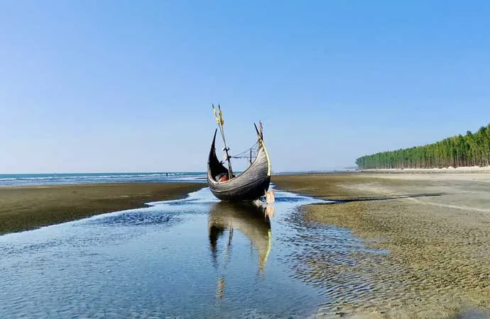
COAST
海岸と夕景
ベンガル湾の風景を眺めながら、ゆっくり過ごします。
詳細を見る
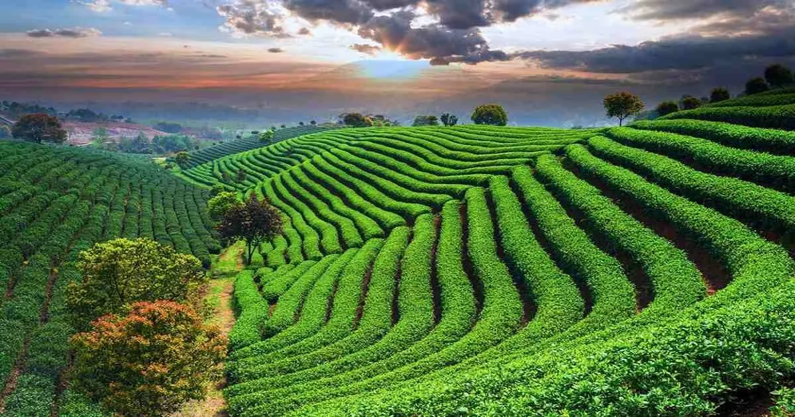
GREEN
森と丘陵
マングローブ、茶園、丘陵地帯の自然を体験します。
詳細を見る
LOCAL CUISINE
バングラデシュのグルメ
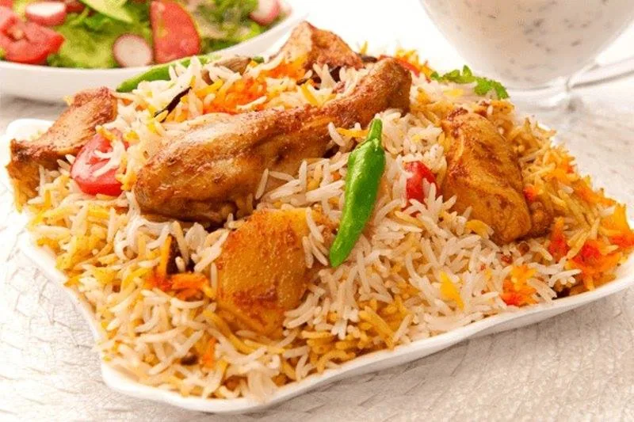
KACCHI BIRYANI
カッチ・ビリヤニ
香り高い米と肉を重ねて炊き上げる、特別な日に親しまれる料理です。
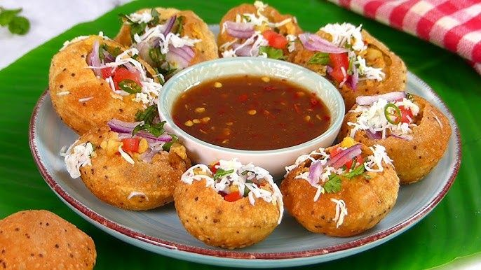
FUCHKA
フチカ
薄い生地に具材と酸味のあるソースを詰めた、人気の屋台料理です。
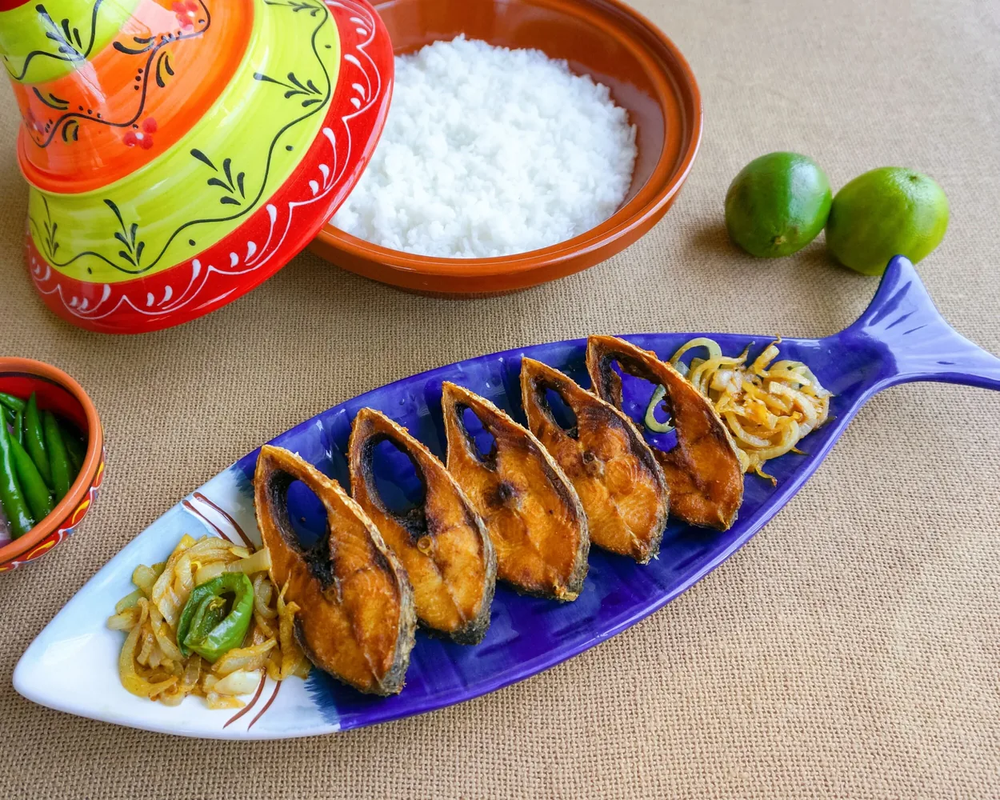
PANTA ILISH
パンタ・イリッシュ
発酵させたご飯とヒルサ料理を組み合わせた、伝統的な食文化の一例です。
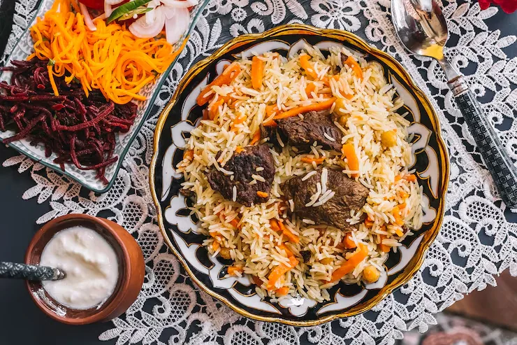
TEHARI
テハリ
スパイスの香りと牛肉のうま味を楽しめる、ダッカで親しまれる米料理です。
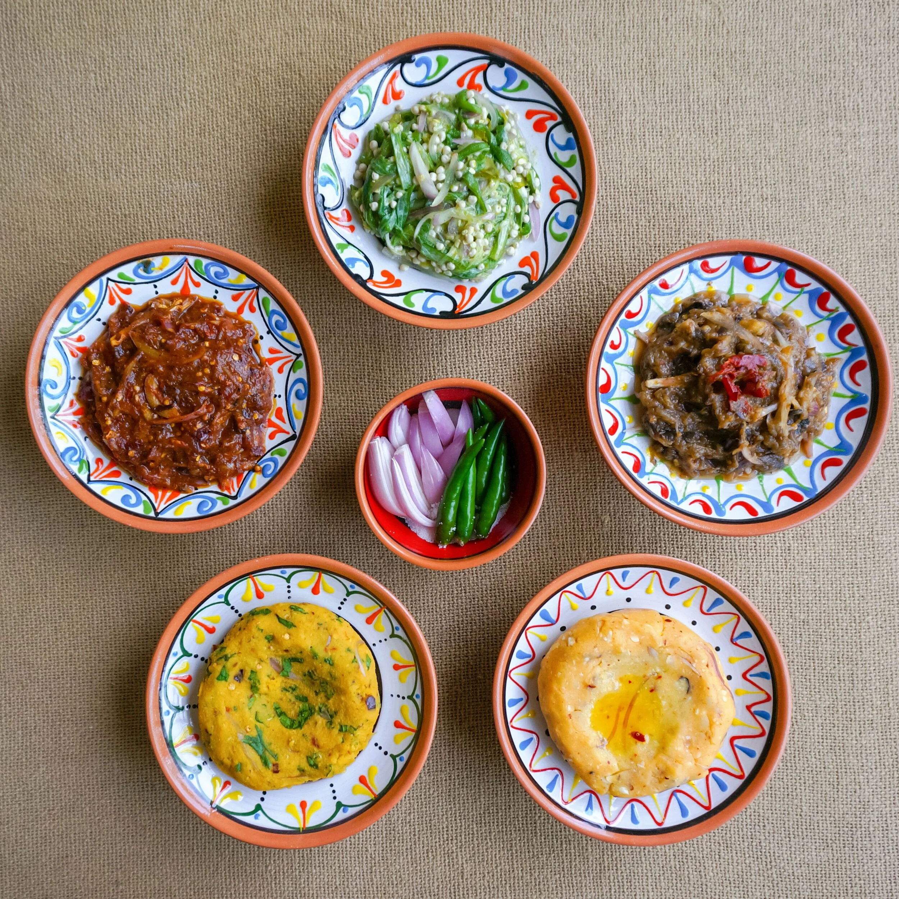
BHORTA
ボルタ
野菜や魚をつぶし、香辛料やハーブと合わせる家庭料理です。
PITHA
ピタ
米粉などを使って作る、季節の行事でも親しまれる伝統菓子です。
SAMPLE ITINERARY
モデルプラン
滞在日数に合わせた一例です。実際の移動時間や営業状況は、旅行前に最新情報をご確認ください。
- DAY 1
ダッカ市内
歴史建築、旧市街、川沿いの風景を巡ります。
- DAY 2
コックスバザール
海岸散策と地域の料理を楽しみます。
- DAY 3
朝の海岸と帰路
朝の景色を楽しんだ後、移動します。
- DAY 1–2
ダッカ
旧市街、博物館、ローカルグルメを体験します。
- DAY 3–4
スンダルバンス
安全に配慮し、認可されたツアーやガイドを利用します。
- DAY 5–6
コックスバザール
海岸と周辺の自然スポットを巡ります。
- DAY 7
ダッカへ移動
買い物や予備時間を確保して帰路につきます。
- DAY 1–2
ダッカ
歴史、現代建築、市場をバランスよく巡ります。
- DAY 3–5
スンダルバンス
自然観察を中心に、余裕のある日程を組みます。
- DAY 6–7
バンダルバン
丘陵や川の風景を楽しみます。
- DAY 8–9
コックスバザール
海岸でゆっくり過ごします。
- DAY 10
移動・予備日
交通状況を考慮し、余裕を持って移動します。
PHOTO GALLERY
写真で見るバングラデシュ
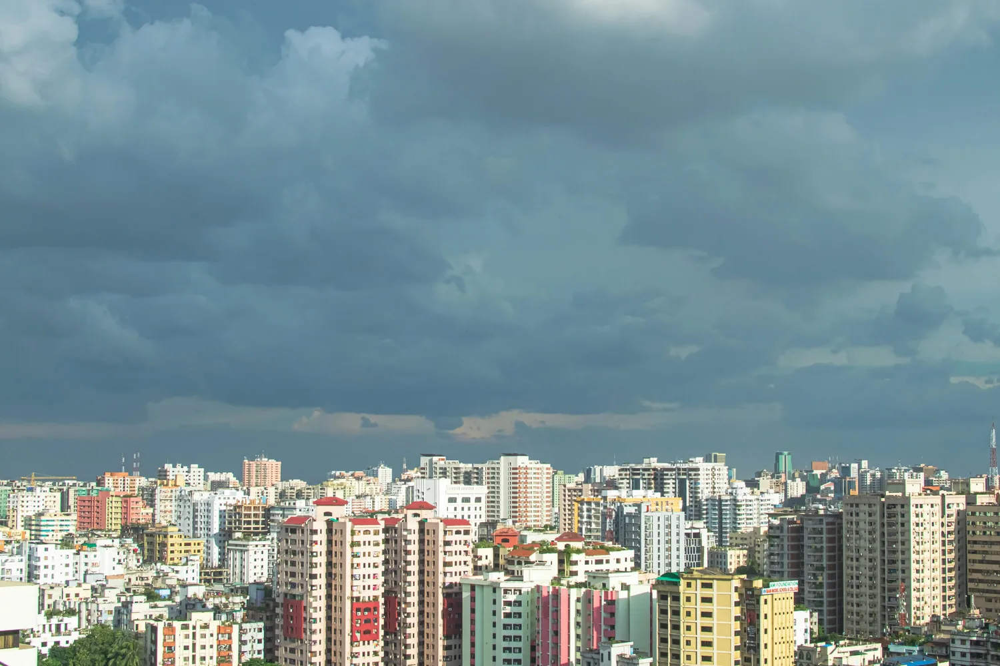
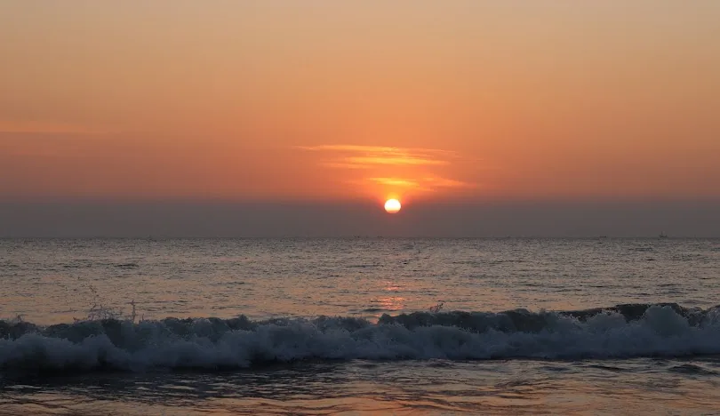
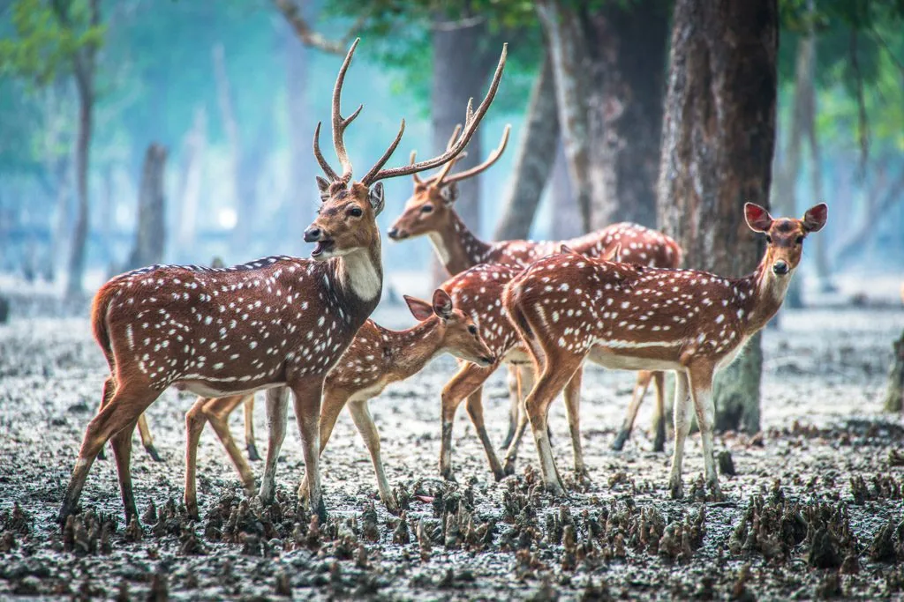
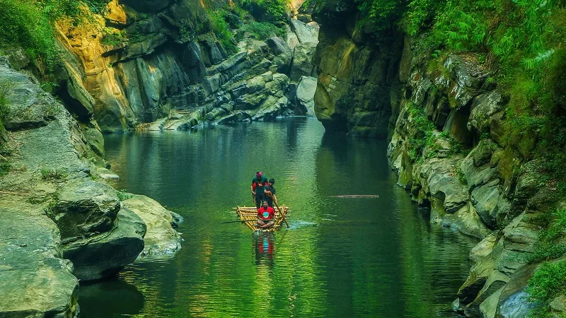
MAP
地図
外部地図サービスを利用しています。